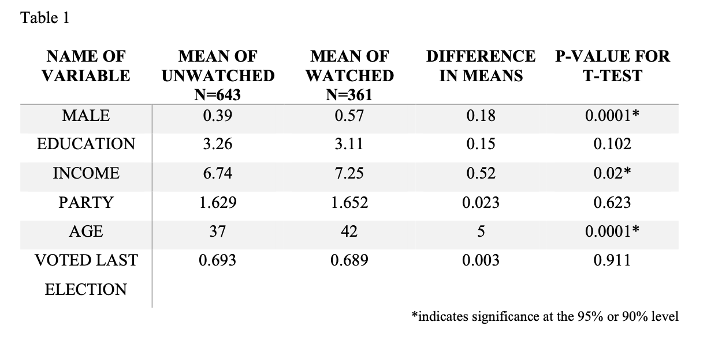
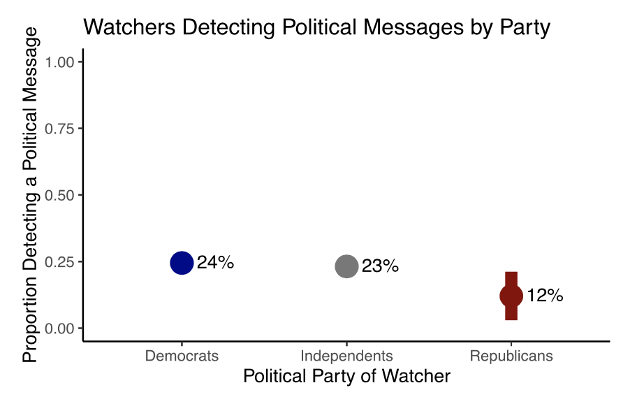
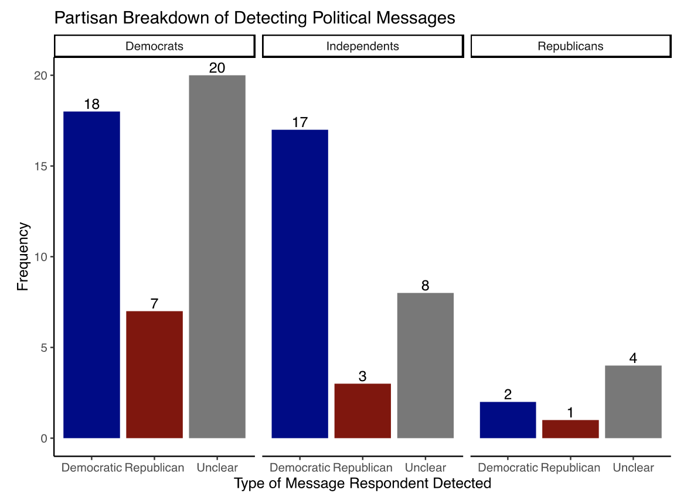
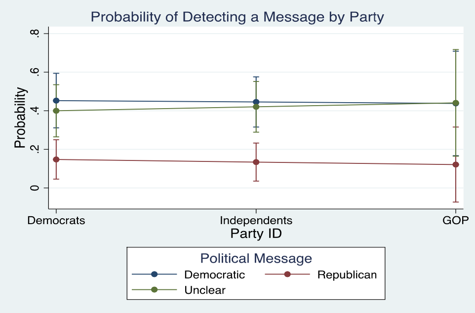

Star Wars: Political Message Detection & Likeability

Introduction
In 2020, I completed a capstone project for my undergraduate degree in Political Science at BYU. I recieved funding from the Political Science department to field a survey from an online panel (n=1000), Prolific. I was interested in studying..
- the effect of whether detecting political messages in a film had on the likeability of that film.
- whether partisans were sensitive to out-party messages. For example, Republicans would more readily recognize Democratic messaging and vice versa.
This is meant to be an overview and summary of the research paper. Think of it as a detailed abstract. To view the full paper, click here.
What I Asked in the Survey..
To find the answer to these questions, I picked a popular movie that had been in theatres recently, Star Wars: the Rise of Skywalker. Then, I asked questions about whether they saw it, and if so, did they detected any political messages. If they did detect poitical messages, I asked them to describe the message they detected.
I also asked how much they liked the film on a scale from 1 to 10; 10 being liking it the most.
What I Found…
Of the 1000 I surveyed, 361 had seen the movie. Here are some stats about them…

The individuals who watched Star Wars skewed male, older, and higher income. Given a simple t-test, there was no significant difference in party affiliation, voting in the last election, and education. Of the 361 watching Star Wars: The Last Jedi 80 identified a political message.
Many of these were ordinal scale questions, so that is why the numbers look a bit weird. For example, looking at the party variable, Democrats were coded as 1, Independents were coded at 2, and Republicans were coded as 3. So, an average of above 2 means there were more Republicans in that particular group and lower than 2 means there were more democrats. See the paper for more detailed information on these questions.
From this point, I wanted to evaluate whether political message detection led to a decrease in likeability of the film. So, I fit a linear regression model using several demographic variables with the variable of interest using a 10 point scale of likeability as the dependent variable. From this model, I found that it had an effect at the 90% confidence level. The interpretation being… if a political message was detected by the respondent, my model predicts that person rates it 0.5 points lower on the likeability scale.
The second part is digging further into the types of messages that were detected and by what party…

From this figure, we see that Republicans were less likely to detect a poltical message than Independents and Democrats.
The error bars are not visible for the point estimates for Democrats and Independents because of a larger N size than Republicans. There is more uncertainty in the true estimate of Star Wars fans detecting a political message given the lower number of Repulicans responding to the survey.

This figure shows the counts of each category and what type of message they detected. From the figure, it seems like everyone seemed to detect more democratic messages than republican messages; however, I really need a larger sample to tell because only 7 republicans in the sample saw the movie and detected a political message.
Perhaps unneccessary, but to get actual estimated probabilities of each person being in this group, I fit a multinomial logistic regression on the dependent variable of the type of political message the respondent detected: Republican, Democrat, or unclear.

No, this graph wasn’t made in R. This model was estimated and the figure was made in Stata for those social science folks who can tell by its distinct style 😂
Evaluating My Hypotheses
Hypthesis 1: detecting political messages in a film would have a negative impact on the respondents likeability of the film This was somewhat true - my model estimated that those that detected a political message liked the film 0.5 points less on a 10 point scale. This finding was significant at the 90% confidence level controlling for demographic characteristics.
Hypthesis 2: Partisans are sensitive to out-party messages. For example, Republicans would more readily recognize Democratic messaging and vice versa. From the data I have, this really wasn’t true. It seems that across the board, respondents from all parties generally identified more Democratic messages than otherwise. Having more statistical power would be helpful, but the numbers we have clearly go against my original hypothesis - especially for democrats who identified many more democratice messages than republican ones.
Reflections From a Few Years Down the Road…
I worked really hard on this project and am honestly proud of the work I did. However, that doesn’t mean that If I were to do it now, I wouldn’t change things. Here’s what I would change:
- As much as I love Star Wars, it would be more interesting if the project was generalizable to other movies. I could have asked about the most recent movie the respondent has seen. I would have gotten more respondents watching movies and been able to have more statistical power for my estimates (only 37% of the sample had seen Star Wars: The Rise of Skywalker). If I chose the route above, it would have also been interesting to dive into what genres of which people are more willing to hear political messages. The tradeoff would be, though, I wouldn’t know some fun stats about the demographics of Star Wars movie watchers that I now know 😂
- It would have been good to use typical survey techniques to account for the non-representative nature of my sample. My sample skewed more interested in the news and more democratic than the US population which is typical of online samples. It would be interesting to experiment with weighting in the tabs I reported and perhaps in my statistical models as well. Using quotas when fielding would also help with the sample quality. These are things I wasn’t thinking about at the time, but now dealing with surveys at my work for some time, this is where my mind goes.
What do you think? Hopefully, you learned something about Star Wars and politics you didn’t know before.